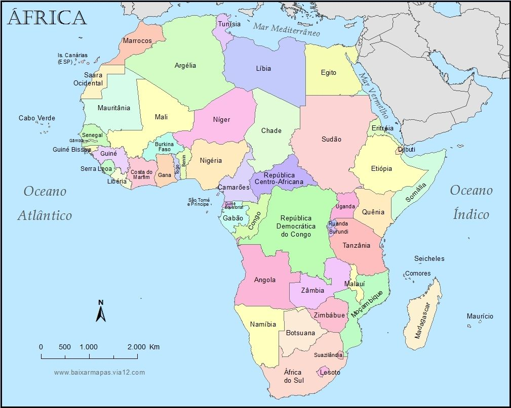

|  | África es uno de los seis continentes de la Tierra y el tercero de mayor tamaño luego de Asia y América. Limita al norte con Europa, al sur con la Antártida, y se encuentra rodeada por el océano Atlántico al oeste y el océano Índico al este. Tiene una extensión total de 30,3 millones de kilómetros cuadrados, lo que representa el 20,3 % del total de la superficie terrestre del planeta. Una característica distintiva de África es el elevado nivel de pobreza que tiene la mayoría de los países del continente. |
||
Según el Banco Mundial, 9 de los 10 países más pobres del mundo se encuentran en África. Ellos son República Centroafricana, Burundi, Malawi, Mozambique, Níger, República Democrática del Congo, Somalia, Sudán del Sur y Guinea Bissau. En estos países, indicadores como la tasa de desnutrición o la mortalidad infantil se encuentran muy por encima del promedio mundial.
|
|||